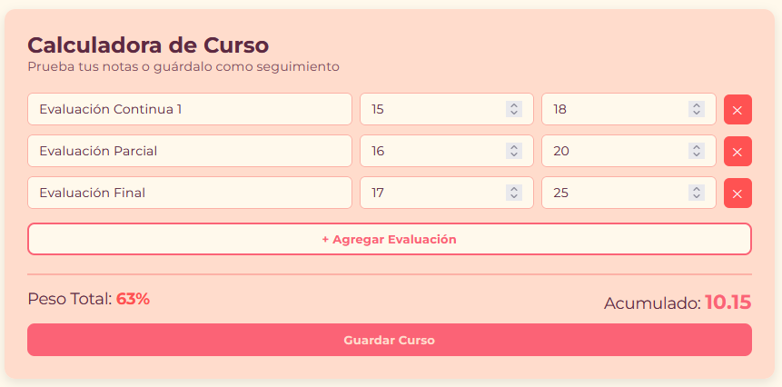
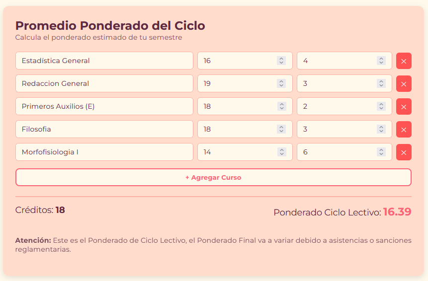
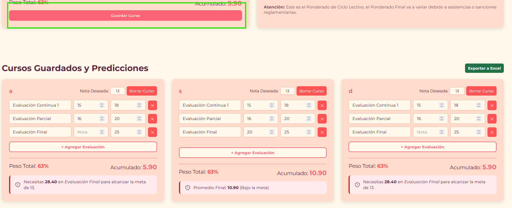
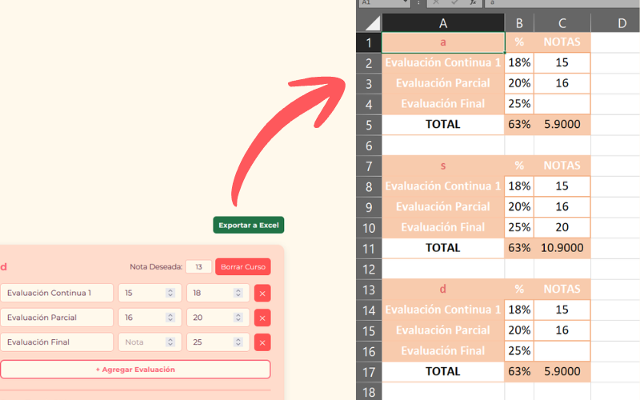
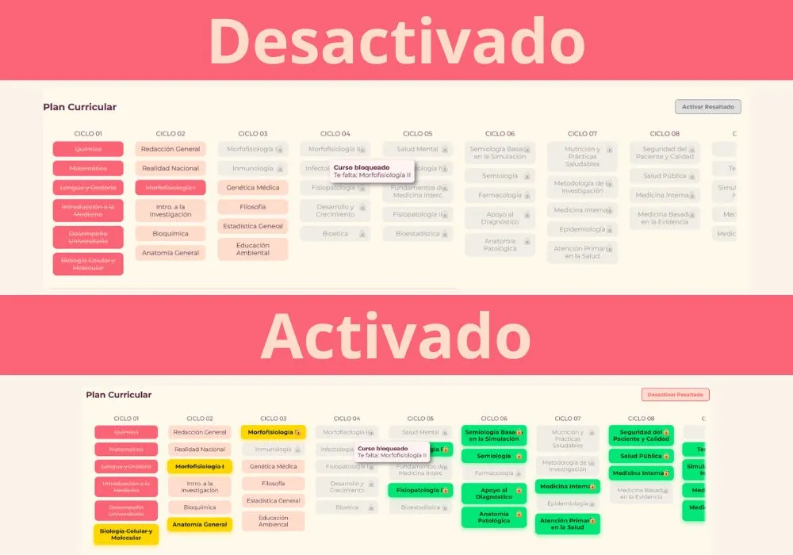
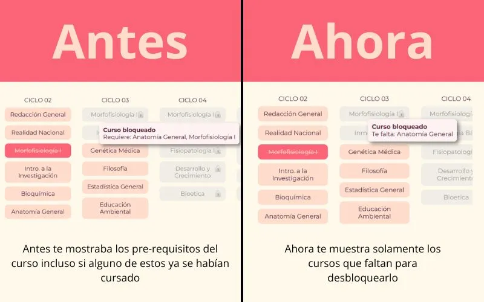

Se han realizado grandes cambios en la pagina:
Calculadora de Curso & Simulador: Ingresa los pesos (%) y notas de tus evaluaciones para conocer tu acumulado actual. Si dejas una nota en blanco, el sistema calculará automáticamente la nota exacta que necesitas sacar en tu examen o trabajo para alcanzar tu nota meta (ej. aprobar con 13).

Promedio Ponderado del Ciclo: Obtén un estimado real de tu promedio ponderado del semestre ingresando la nota final de cada materia y sus créditos correspondientes.

Seguimiento y Cursos Guardados: Puedes guardar tus materias para modificarlas clase a clase. Además, si inicias sesión, tus cursos simulados se guardarán en la nube para consultarlos desde cualquier dispositivo.

Exportación a Excel Formateada: Descarga un reporte visual de tus materias en archivo de Excel (.xls), ordenado en bloques por curso y con fórmulas automáticas para proyectar tus promedios en tu computadora.

Se han hecho unos cambios en las funcionalidades de la web:


Ayuda, keiko me tiene encerrado y me va a electrocutar, para que eso no pase porfavor rellena este formulario
La malla curricular se ha actualizado con ella algunos pre-requisitos de los cuales lo más importante es: